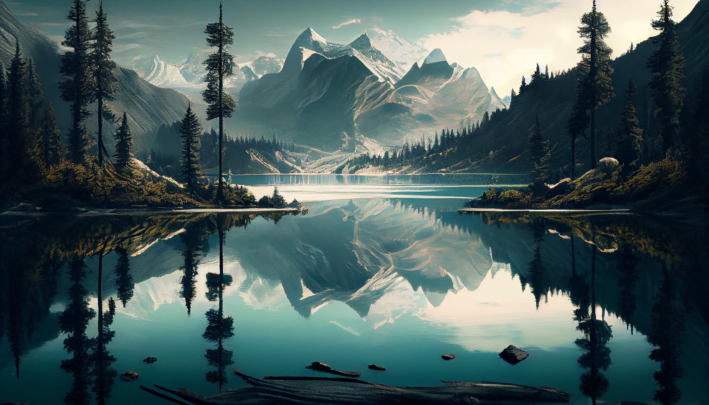

Una montaña es una figura topográfica del relieve terrestre positiva, una eminencia natural que se caracteriza por su altitud y, más generalmente, por su altura relativa, o incluso por su volumen, pendiente, espaciado o continuidad.2 Aparecen como parte de un conjunto —una cadena montañosa, es decir cordillera, macizo, sierra...— o formando un relieve aislado.Nota 1Nota 2Nota 3Nota 4 No existe una definición única de montaña, un término que apareció en Europa entre los siglos X y XII, y son numerosos los localismos y regionalismos usados para describir este accidente geográfico, que puede referirse tanto a una cumbre empinada como a una elevación simple del terreno como una colina, así como al medio en su conjunto. Según sean los procesos que conducen a su formación las montañas toman formas muy diferentes: desde escarpes de los márgenes continentales y rifts en dominios extensivos, hasta cadenas de colisión y plegamiento, pasando por arcos insulares con volcanes en las zonas de subducción, sin olvidar el volcanismo de punto caliente o la contribución al solevantamiento por intrusiones. Con la isostasia, las montañas experimentan fenómenos de levantamiento y adelgazamiento de la corteza que finalmente conducen a su desaparición. Las cadenas montañosas más antiguas de la Tierra se remontan al Paleozoico, y cuanto más antiguas son, tanto más bajas y redondedas tendrán sus siluetas.